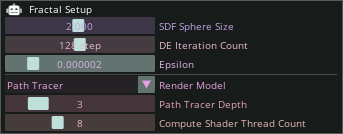
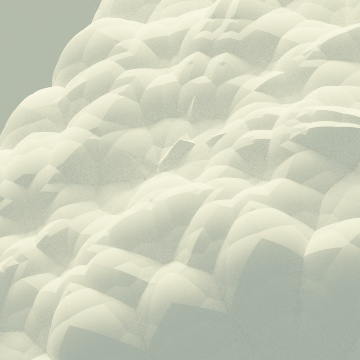
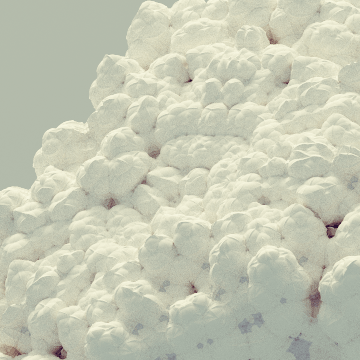
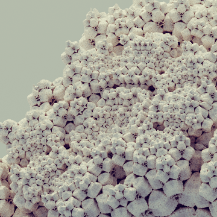

Start · UI Reference · Node Reference
The Camera Setup Node is responsible for the camera settings, such as camera positioning, zooming, focusing, tone mapping, and various lens effects.
You can illuminate the fractal with two fixed types of light: a directional light (e.g. sunlight) and an ambient light (e.g. skylight). You will find their settings here.
The Fractal Setup Node is responsible for the quality and speed of fractal rendering. Among other things, parameters such as fractal resolution and rendering algorithm can be adjusted. These settings allow for optimization of the rendering process.

The entire fractal rendering starts with the drawing of a sphere with the radius specified here, and then, depending on the number of iterations, this sphere is folded, mirrored, and scaled down in space. For a detailed fractal rendered with many iterations, this parameter does not matter because after many iterations, the size of this sphere approaches the infinitely small, instead the fractal geometry itself will be the determining factor.
The number of iterations executed recursively. The larger it is, the more detailed the fractal geometry, but the more calculations need to be performed.
|  |  |  |
|---|---|---|
| Iteration Count: 10 | Iteration Count: 16 | Iteration Count: 128 |
Technical parameter that determines how close the ray can get to the fractal during ray tracing. Since the program works with finite precision numbers during calculations, it is necessary to bias to avoid numerical errors. It can also be used for optimization, if we don't allow the ray to get too close to the fractal, then the render will be faster due to fewer calculations.
You can choose from two algorithms to render your fractal: - Path Tracer: Photorealistic, but slow. - Simple: Faster, but does not calculate global illumination and ambient occlusion is only estimated.
The number of reflections of light rays during path tracing. The larger it is, the better it reproduces global illumination, but the more calculations need to be performed.
It does not change the rendered image, it only optimizes the rendering speed. The program runs the calculations on your GPU, and this parameter determines how many threads to use for the calculations. If there are too many, the calculation may slow down due to communication between the threads on the GPU, if there are too few, it may not use the full performance of the GPU.
Its setting depends on the type of your GPU and the fractal, so it is recommended to try which is the best.
Here you will find the settings responsible for the shape of the kaleidoscopic IFS fractal.
You can perform various spatial transformations (e.g. translations, rotations) with these nodes.
Here you can set the diffuse and emissive color of the fractal.
Here you can manipulate the speed of the animation set on the timeline.